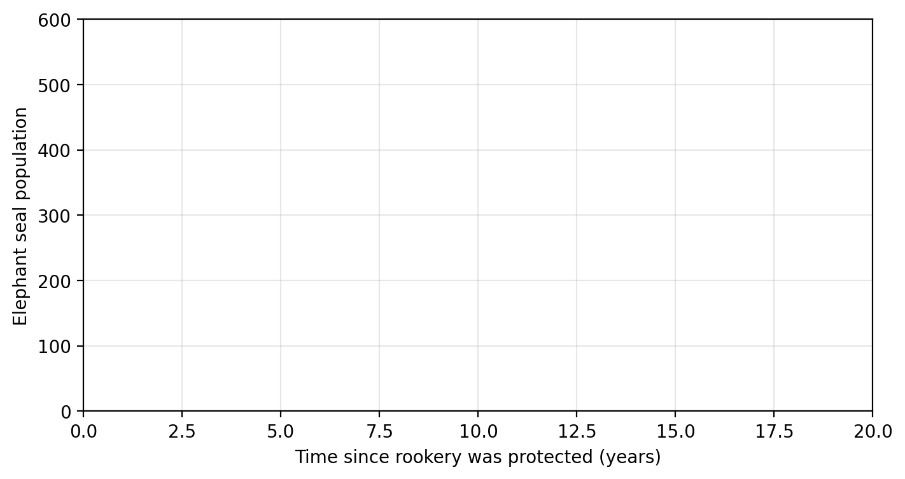
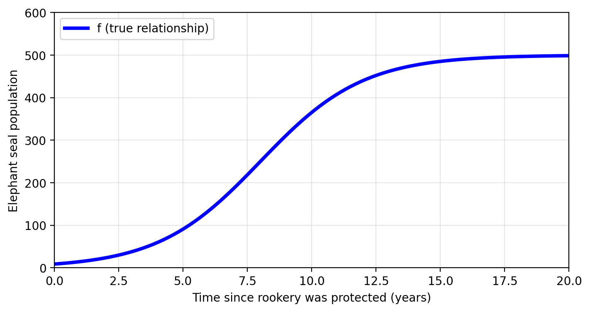
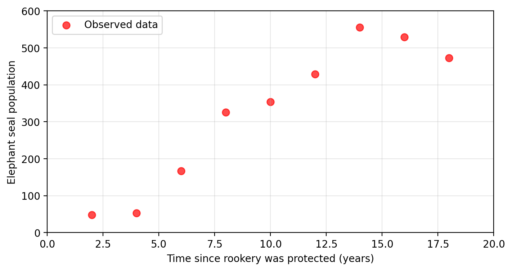
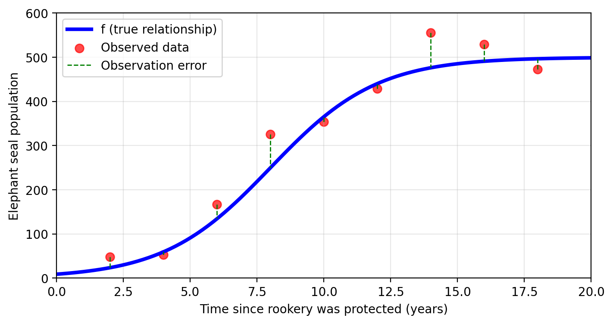
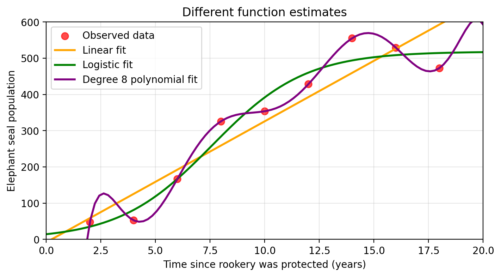
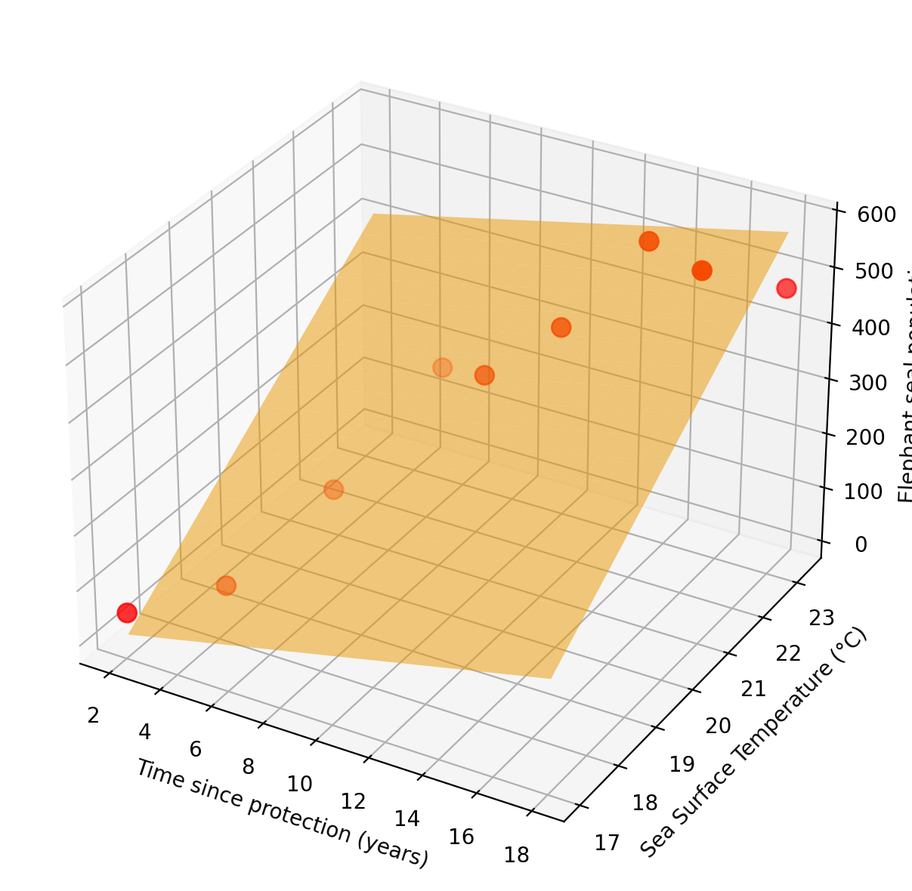
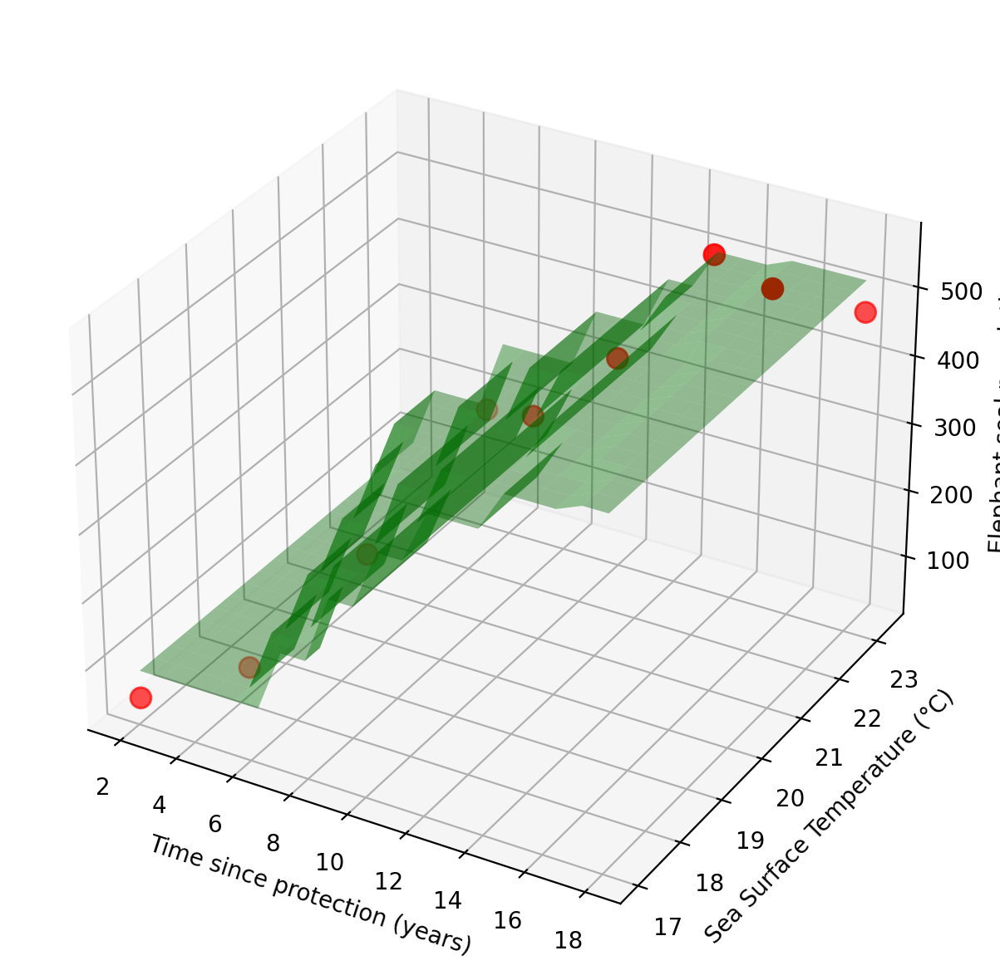
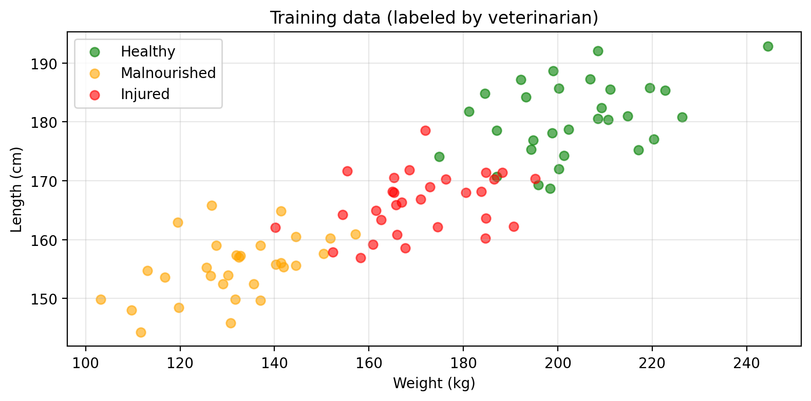
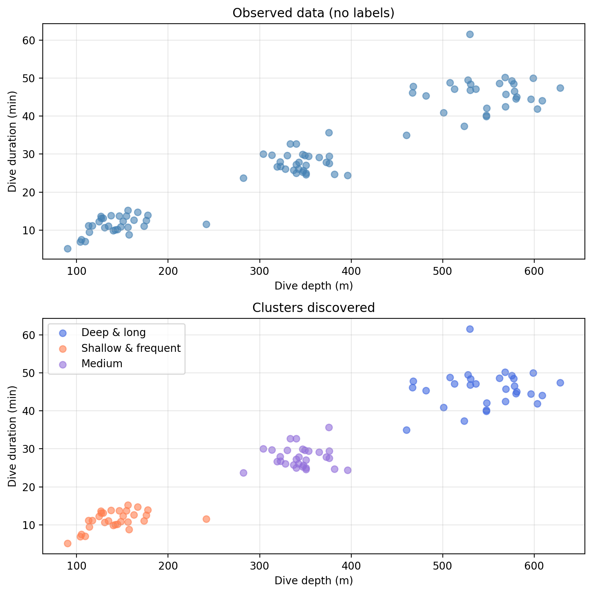

{kind=link}

Learning from data
In this lesson we introduce:
- The idea of estimating a function \(f\) using observed data
- Inference and prediction
- Training set = observations used to fit/train a model
- Predictors + response variable & their math notation
- Parametric vs. non parametric
- Regression vs. classification
- Unsupervised vs. supervised learning
These notes are based on chapter 2.1 of the book An Introduction to Statistical Learning with Applications in Python (James et al., 2023).
Investigating elephant seal population
Amanda is a marine scientist investigating how protected areas affect the population of elephant seals in California. Specifically, she wants to understand: how does elephant seal population change in a protected rookery that has just been protected?

She identifies the predictor variable as time since the rookery was protected and the response variable as elephant seal population (since elephant seal population responds on time).
An ideal function \(f\) exists somewhere, we just can’t access it
What if Amanda was given the true, real relationship between time and population?
In mathematical terms, this would mean Amanda would have a function \(f\) such that
\[f(\text{time since protection}) = \text{true population}.\]

Check-in
What does \(f(0)\) represent? What does \(f(5)=100\) mean?
What could Amanda do if she had this function \(f\)?
Discussion
She could understand whether and how population and time are related: is there no relation, does it increase, decrease, varies, etc?
She could also understand the mathematical form of this relationship: for example, is it linear? These are examples of using the function \(f\) for inference.
She could also use the function \(f\) to know the elephant seal population in the future, i.e. using the function for prediction. In addtion, she could probably save resources spent in going out into the field for data collection.
Our next best option is to estimate \(f\) using data
Clearly Amanda has no access to this true, ideal function! So her next best option is to try to estimate \(f\) using data.
Fortunately, she found some long-term ecological data that measures the elephant seal population since the protection for the rookery was established:

These are the observed values for the response variable.
Check-in
Are the observed values the “true values” for the response variable?
Error can be introduced during measurement. In this case we have
\[f(\text{time}) = \text{true population} = \text{observed population} + \text{error}\]

With these observed population values at a given time, Amanda can try to estimate the real function \(f\) with another function \(\hat{f}\). Some estimates of \(f\) are shown in the graph below.

Check-in
What considerations can Amanda take into account when choosing an estimate \(\hat{f}\)?
Discussion
Many! Preliminary understanding of the data, the application (prediction or inference?), volume of available data, minimizing error, even computing power. Selecting any \(\hat{f}\) comes with tradeoffs!
Abstract setup
Roughly, this is the setup in which we will be working in. Let’s see it more abstractly:
We have a set of \(p\) predictors \(X_1, ..., X_p\) and a dependent variable \(Y\).
We assume there is a relationship between \(Y\) and \(X = (X_1, ..., X_p)\) that can be written as \[Y = f(X) + \epsilon.\]
Here \(f\) is some fixed but unknown function of the predictors \(X_1, . . ., X_p\) and \(\epsilon\) represents an error term (independent of \(X\) and with mean zero).
Our objective is to estimate \(f(X)\) well enough with another function \(\hat{f}(X)\).
Why bother to estimate \(f\)?
Do inference: use \(\hat{f}\) to understand which predictors are associated with the response and understand the form of this relationship.
Do predictions: this means calculating \(\hat{f}(X) = \hat{Y}\) to predict what the value of \(Y\) will be with at a new input \(X\).
Depending whether our goal is prediction, inference, or a combination of the two, we may select different methods for estimating \(f\).
Generally:
- models for \(f\) that are interpretable enough to allow inference may not be have as accurate prediction results as other approaches.
- models for \(f\) that can give excellent predictions, may not be as interpretable and make inference more challenging.
There’s a tradeoff.
Generally, machine learning may prioritize predictions over interpretability (we want the best prediction, even if we got it out of a black box), while statistical modeling may prioritize interpretability over prediction.
Check-in
What are some problems or scenarios where inference may be more important than prediction? What about an problems or scenarios where prediction is the priority?
How do we estimate \(f\)?
We start with a set of \(n\) observed data points:
\[ \{ (x_1, y_1) , ..., (x_n, y_n)\}, \]
where
- \(x_i\) = a vector with with the predictor information, and
- \(y_i\) = the response variable for the \(i\)-th observation.
These data points are the training set or training data because we will use them to train (or fit) our method and obtain an estimate \(\hat{f}\) of the “true” function \(f\).
Our goal is to apply methods to the training data to estimate the unknown function \(f\) that links predictors with the response.
The “learning” part in machine learning is precisely the process of adjusting \(\hat{f}\) to minimize error on the training data.
Notation
Our training set has \(n\) observed data points:
\[ \{ (x_1, y_1) , ..., (x_n, y_n)\}.\]
If we have \(p\) predictors, then each \(x_i\) is a vector of the form: \[x_i = (x_{i1}, ..., x_{ip}).\] The response variable \(y_i\) is just a single number or category.
For example, for our previous data we would transfor the data table into the corresponding notation as shown below.
| Obs. | Time (Predictor) | Population (Response) |
|---|---|---|
| 1 | 2 | 53 |
| \(\vdots\) | \(\vdots\) | \(\vdots\) |
| 5 | 10 | 353 |
| \(\vdots\) | \(\vdots\) | \(\vdots\) |
| 9 | 18 | 473 |
→
\((x_1,y_1) = (2,53)\)
\(\vdots\)
\((x_5,y_5) = (10,353)\)
\(\vdots\)
\((x_9,y_9) = (18,473)\)
If we were to add average annual sea surface temperature (SST) as a second predictor variable, then our notation would update accordingly:
| Obs. | Time (Predictor 1) | SST (Predictor 2) | Population (Response) |
|---|---|---|---|
| 1 | 2 | 17.05 | 53 |
| \(\vdots\) | \(\vdots\) | \(\vdots\) | \(\vdots\) |
| 5 | 10 | 20.86 | 353 |
| \(\vdots\) | \(\vdots\) | \(\vdots\) | \(\vdots\) |
| 9 | 18 | 23.27 | 473 |
→
\(x_1 = (x_{1,1}, x_{1,2}) = (2, 17.05)\)
\(y_1 = 53\)
\(\vdots\)
\(x_5 = (x_{5,1}, x_{5,2}) = (10, 20.86)\)
\(y_5 = 353\)
\(\vdots\)
\(x_9 = (x_{9,1}, x_{9,2}) = (18, 23.27)\)
\(y_9 = 473\)
Parametric methods
Broadly, most methods for estimating \(f\) can be characterized as parametric or non-parametric.
Parametric methods estimate \(f\) in two steps:
Make an assumption about the functional form or shape of \(f\).
Use the training data to train or fit the model and get those parameters that will define the estimate \(\hat{f}\).
Considerations:
- May be used with small training sets
- May be computationally easier to estimate a few parameters
- Simpler functional forms for \(\hat{f}\) can make inference easier
- Assumed functional form for \(\hat{f}\) may be far from true \(f\), making predictions inaccurate
- Predictions could not be as good
Example
- Amanda decides to model the population with a linear model on the predictors \(X_1 =\) time and \(X_2=\) average annual sea surface temperature (SST). This means she assumes the function
\[f(\text{time}, \text{SST}) = \text{population}\]
has the form
\[ f(x_1, x_2) = \beta_0 + \beta_1 x_1 + \beta_2 x_2. \]
- She trains the model to get an estimate for \(f\), by finding parameters \(\beta_0, \beta_1\), and \(\beta_2\) such that
\[ \text{observed data} \approx \beta_0 + \beta_1 \text{time} + \beta_2 \text{SST} .\]
This is great! She only needs to find three numbers to get a model for the population.
Linear Model: Population = -1112.46 + 10.10*Time + 64.58*SST
Non-parametric methods
Non-parametric methods do not make explicit assumptions about the functional form of \(f\). Instead, they seek an estimate of \(f\) that gets as close to the training set as possible without being “being too rough or wiggly”.
Considerations:
- May be better at prediction
- May need a lot of data to fit the model
- May follow errors or noise in the data too closely
- May be less interpretable than more restrictive models
Example
Instead of assuming a linear form, Amanda uses K-nearest neighbors (KNN) to estimate \(f(\text{time}, \text{SST})\). For any new combination of time and SST, the model predicts population as the average of the \(K\) most similar observations in the training set. No assumptions about the shape of \(f\) required.

Notice the fitted surface is no longer a flat plane, but it bends and curves to follow the data. Amanda did not specify any functional form; the shape of \(\hat{f}\) emerges entirely from the training observations.
Regression vs. Classification
Variables can be either:
quantitative: continuous numerical values, or
qualitative or categorical: values in one of \(K\) different classes or categories.
Problems having a quantitative response are regression problems.
Problems having a qualitative response are classification problems.
We tend to select machine learning methods based on whether the response is quantitative or qualitative.
What about the predictors being quantitative or categorical? Not as important, often possible to code qualitative predictors before the analysis.
Example
Amanda wants to predict the health status of individual adult seals. A veterinarian has assessed a sample of seals and labeled each one as healthy, malnourished, or injured. Amanda wants to train a classifier using weight and length as predictors:
\[f(\text{weight, length}) = \text{health status} \in \{\text{healthy, malnourished, injured}\}.\]
Her labeled training data looks like this:
| Obs. | Length (Predictor 1) | Weight (Predictor 2) | Health status (Response) |
|---|---|---|---|
| 1 | 173.58 | 200.14 | healthy |
| \(\vdots\) | \(\vdots\) | \(\vdots\) | \(\vdots\) |
| 44 | 157.06 | 122.96 | malnourished |
| \(\vdots\) | \(\vdots\) | \(\vdots\) | \(\vdots\) |
| 90 | 163.48 | 164.98 | injured |
→
\(x_1 = (x_{1,1}, x_{1,2}) = (173.58 ,200.14)\)
\(y_1 =\) healthy
\(\vdots\)
\(x_{44} = (x_{44,1}, x_{44,2}) = (157.06, 122.96)\)
\(y_{44} =\) malnourished
\(\vdots\)
\(x_{90} = (x_{90,1}, x_{90,2}) = (163.48, 164.98)\)
\(y_{90} =\) injured
She can use this data to train a classifier, and then use it to predict the health status of new, unlabeled seals given their weight and length.

Unsupervised vs. Supervised Learning
Supervised learning: each observation has predictors associated to a response variable: \[\text{training set} = \{(x_1, y_1), ..., (x_n, y_n)\}\]
where each \(x_i = (x_{i1}, ..., x_{ip})\) is a vector with \(p\) predictors and \(y_i\) is the response to \(x_i\).
Unsupervised learning: each observation only has features, no response variable.
Our training set only has observations of \(p\) different features: \[ \text{training set} = \{ x_1, ..., x_n\},\]
where each \(x_i = (x_{i1}, ..., x_{ip})\) is a vector with \(p\) features. There’s no reponse variable \(Y\).
In unsupervised learning problems, we seek to understand the relationships between the variables or between the observations.
Example
Amanda records dive depth and dive duration for a large number of seals, but has no prior labels or categories in mind. She wants to know: are there distinct foraging strategies among these seals? Her data looks like this:
| Obs. | Depth (Feature 1) | Duration (Feature 2) |
|---|---|---|
| 1 | 585.29 | 39.39 |
| \(\vdots\) | \(\vdots\) | \(\vdots\) |
| 23 | 108.23 | 9.52 |
| \(\vdots\) | \(\vdots\) | \(\vdots\) |
| 41 | 324.37 | 23.2 |
→
\(x_1 = (x_{1,1}, x_{1,2}) = (585.29, 39.39)\)
\(\vdots\)
\(x_{23} = (x_{23,1}, x_{23,2}) = (108.23, 9.52)\)
\(\vdots\)
\(x_{41} = (x_{41,1}, x_{41,2}) = (324.37, 23.2)\)
In this case, there is no response variable \(y\), Amanda lets the algorithm find structure in the data on its own.

The top plot shows what Amanda starts with: just measurements, no categories. The bottom plot shows the structure the algorithm uncovers, which Amanda interprets as distinct foraging strategies.
Check-in
What is the key difference between the classification and clustering examples above?
Recap
What we covered today:
- The idea of estimating a function \(f\) using observed data
- Inference and prediction
- Training set = observations used to fit/train a model
- Predictors + response variable & their math notation
- Parametric vs. non parametric
- Regression vs. classification
- Supervised vs. unsupervised learning
Next class: assessing model accuracy